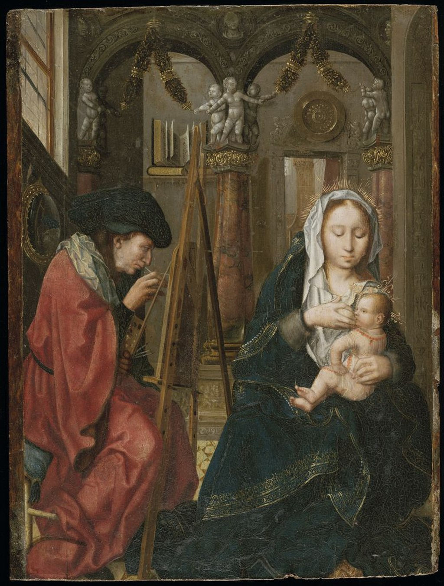

<head>
<meta charset="UTF-8" />
<meta name="keywords" content="drawing, painting" />
<meta name="description" content="drawings by Sunjy" />
<title>Sunjy</title>
<link rel="shortcut icon" type="image/x-icon" href="../../mImages/mCommon/favicon.ico" media="screen" />
<link rel="stylesheet" type="text/css" href="../../mCsses/mCommon/mCssA.css" />
<link rel="stylesheet" type="text/css" href="../../mCsses/mCommon/mCssB.css" />
<link rel="stylesheet" type="text/css" href="../../mCsses/mCommon/mCssC.css" />
<link rel="stylesheet" type="text/css" href="../../mCsses/mCommon/mCssD.css" />
<link rel="stylesheet" type="text/css" href="../../mCsses/mContent/mCssA.css" />
<link rel="stylesheet" type="text/css" href="../../mCsses/mContent/mCssB.css" />
<link rel="stylesheet" type="text/css" href="../../mCsses/mContent/mCssC.css" />
<link rel="stylesheet" type="text/css" href="../../mCsses/mContent/mCssD.css" />
</head>
<script type="text/javascript" src="../../mScripts/mContent/mContentAA.js" /></script>
<script type="text/javascript" src="../../mScripts/mContent/mContentAB.js" /></script>
<script type="text/javascript" src="../../mScripts/mContent/mContentAC.js" /></script>
<script type="text/javascript" src="../../mScripts/mContent/mContentAD.js" /></script>
<script type="text/javascript"></script> 
<script type="text/javascript">
document.write('<div class="mImgAbsolute"></div>');
/*
document.write('<p class="mFontSizeBColor" />From a white paper...</p>');
document.write('<table class="center"><tr><td>');
document.write('');
document.write('</td></tr></table>');
*/
</script>


<script type="text/javascript">
document.write('<p class="mFontSizeBColor" />Saint Luke painting the Virgin</p>');
document.write('<p class="mFontSizeSColor" />“Saint Luke painting the Virgin” by an unidentified painter known as the “Master of the Holy Blood” is a devotional subject in art showing Luke, the Evangelist, painting the Virgin Mary with the Child Jesus. This composition was often painted during the Renaissance for chapels of Saint Luke in churches.<br><br>This scene became increasingly popular as Saint Luke became the patron saint of the Guild of Saint Luke, the most common name of local painters’ guilds. These guilds were often conglomerate associations of various professions, including painters, paint-mixers, book illuminators, and sellers of these goods.<br><br>The legend of Saint Luke as the author of the first Christian icons had developed in Byzantium during the Iconoclastic Controversy. By the 11th century, some images started being attributed to his authorship and venerated as authentic portraits of Christ and the Virgin Mary. Versions of this subject were sometimes painted as the masterpiece, that many guilds required an artist to submit, before receiving the title of master.<br><br>The unidentified painter is known as the “Master of the Holy Blood”, as very little is known of their life. This painter is named after a “Triptych of the Crucifixion” that had been in the ‘Basilica of the Holy Blood’, in Bruges during the centuries.<br></p>');
document.write('<table class="center" /><tr><td>');
document.write('<br>This scene became increasingly popular as Saint Luke became the patron saint of the Guild of Saint Luke, the most common name of local painters’ guilds. These guilds were often conglomerate associations of various professions, including painters, paint-mixers, book illuminators, and sellers of these goods.<br><br>The legend of Saint Luke as the author of the first Christian icons had developed in Byzantium during the Iconoclastic Controversy. By the 11th century, some images started being attributed to his authorship and venerated as authentic portraits of Christ and the Virgin Mary. Versions of this subject were sometimes painted as the masterpiece, that many guilds required an artist to submit, before receiving the title of master.<br><br>The unidentified painter is known as the “Master of the Holy Blood”, as very little is known of their life. This painter is named after a “Triptych of the Crucifixion” that had been in the ‘Basilica of the Holy Blood’, in Bruges during the centuries.<br>" />');
document.write('</td></tr></table>');
</script>


